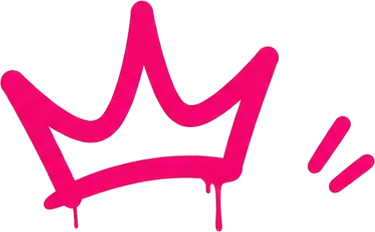
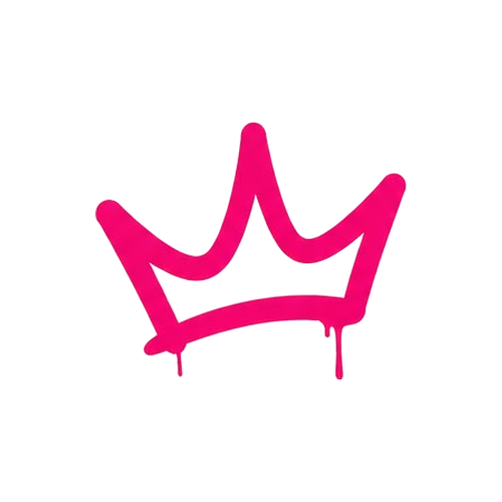

Manual de identidad
Cómo se ve Festa. Los valores salen de la página «Fundamentos» del diseño en Figma y son los mismos que usa la app.
La marca
Menos buscar, más vivir la ciudad.
Festa ayuda a descubrir eventos en Bogotá y le da visibilidad a los comercios locales. Su asistente de inteligencia artificial se llama Festi.
Logo y corona
- LogoTexto negro y corona magenta. En la app se usa en la pantalla de arranque.Descargar PNG

- CoronaLa marca corta: se usa en el resto de las pantallas.Descargar PNG

- Ícono de la appSolo la corona, sin el texto, sobre fondo blanco.Descargar PNG



El logo va sobre fondos claros.
Sobre fondos oscuros el texto negro se pierde.
Color
La paleta sale del logo: negro de aerosol y corona magenta. Tres colores tienen un significado fijo: lila para la IA, menta para lo gratis y amarillo para un Parche en Vivo.
Marca
- Marca
#F0127Ebg/brand - Marca oscuro
#C20A65text/brand - Marca suave
#FFE3F0bg/brand-soft - Tinta
#111111text/primary
Neutros
- Texto secundario
#5A5A5Atext/secondary - Borde
#DEDEE3border/default - Fondo gris
#F1F1F4bg/muted - Papel
#FAFAFAbg/subtle
Con significado
- Gratis
#E6FFF3bg/free - IA / Festi
#D9CCFFbg/ia - IA acento
#A66CFFaccent/ia - Parche en Vivo
#FFD23Fbg/live - Coral
#FF9EA6accent/coral
Avisos
- Éxito
#1E9E5Afeedback/success - Éxito en texto
#15703Ftext/success - Error
#D64545feedback/error - Alerta
#B7791Ffeedback/warning
Contraste del texto
El texto sobre magenta va en negro. Para texto normal se exige al menos 4,5:1 (WCAG AA).
| Combinación | Contraste | ¿Cumple AA? |
|---|---|---|
| Festa Tinta sobre papel | 18,1:1 | Sí |
| Festa Tinta sobre magenta | 4,6:1 | Sí |
| Festa Blanco sobre magenta | 4,1:1 | No: no usar en texto normal |
| Festa Marca oscuro sobre blanco | 6,0:1 | Sí |
| Festa Texto secundario sobre blanco | 6,9:1 | Sí |
| Festa Éxito en texto sobre blanco | 6,1:1 | Sí |
| Festa Tinta sobre lila (IA) | 12,6:1 | Sí |
Tipografía
Bricolage Grotesque para los títulos grandes y Plus Jakarta Sans para el resto. Ambas tienen licencia abierta (OFL). Cada estilo indica tamaño e interlínea en píxeles.
- Display/L · 40/44Menos buscar, más vivir la ciudad
- Title/L · 28/34Menos buscar, más vivir la ciudad
- Title/M · 20/26Menos buscar, más vivir la ciudad
- Title/S · 16/22Menos buscar, más vivir la ciudad
- Body/L · 16/24Menos buscar, más vivir la ciudad
- Body/M · 14/20Menos buscar, más vivir la ciudad
- Label/L · 16/20Menos buscar, más vivir la ciudad
- Label/M · 14/18Menos buscar, más vivir la ciudad
- Caption · 12/16Menos buscar, más vivir la ciudad
Espaciado y radios
La escala parte de 4 px. Las esquinas redondeadas dan el tono amable de la marca.
- 2xs · 4
- xs · 8
- sm · 12
- md · 16
- lg · 20
- xl · 24
- 2xl · 32
- 3xl · 40
- sm · 8
- md · 12
- lg · 20
- xl · 28
- completo
Reglas para diseñar pantallas
- Usar solo los colores, estilos de texto, espacios y radios de este manual.
- Usar los botones y campos del tema, sin estilos propios.
- Si falta un valor, se agrega primero en Figma y después en el código.
- El diseño define únicamente el modo claro.